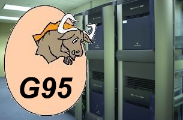

Welcome to the home of
GNU Fortran 95
The GNU Fortran 95 project, or G95, is developing a Fortran 95
compiler front end, as well as runtime libraries, for
GCC, the GNU Compiler Collection. G95 development is a part of the
GNU Project, aiming to bring free
number crunching to all GNU system variants, including GNU/Linux.
The G95 development effort uses an open development environment in
order to attract a larger team of developers and to ensure that G95 can
work on multiple architectures and diverse environments.
In particular, the project wishes to reach the users of the
Fortran 95 language, be it in the scientific community, in education
or in a commercial environment. Today, truly free Fortran 90 or
Fortran 95 compilers do not exist. We are trying to make one
available to the Fortran community.
You can reach us at the
fortran@gcc.gnu.org
mailing list. For subscribing to the mailing list, see
this page.
Project goal
We strive to provide a high quality release, which we want to work
well on a variety of native (including GNU/Linux) targets. We do not
believe we can make the best Fortran 95 compiler, but we want it to be
adequate.
The focus is on standard conformance and on good performance of the
executables produced by the compiler. Secondary goals include
reasonable compile speed, a small memory foot print, and the ability
to build a cross-compiler.
We expect to provide the following
language extensions.
Status of compiler and run time library
We regularly update the status of the
front end development and the status
of the run time library development.
We also keep a TODO list.
Contributing
We encourage everyone to contribute changes
and help test G95. G95 is developed on the so-called "tree-ssa" branch of GCC.
We provide read access to our development sources for everybody with
anonymous CVS.
Daily snapshots of the branch are also
available.
Usage
Here is a short explanation on how to invoke and
use the compiler once you have built it (or downloaded the binary).
Suggested reading
We provide links to some information relevant to
Fortran programmers.
News/Announcements
Note: Some of the links below are no longer active - this part of the
page is preserved for historical reasons.
- July 05, 2003
- New x86 GNU/Linux binaries have been released. Get them
here.
Note these tend to get out of date fairly quicky, so it's reccommended
that you compile your own from GCC CVS if
possible.
- July 27, 2003
- gcc-g95 has been integrated into the tree-ssa branch of
the GCC CVS repository
(announcement on mailing list here). This
branch of GCC will become part of official GCC releases by the time
GCC 3.5 is released. This web page and our mailing list will move to
gcc.gnu.org sometime soon.
- July 11, 2003
- The anonymous CVS server seems to get updated again, so please
update your local copies and give our sources a try.
- July 05, 2003
- New x86 GNU/Linux binaries have been released. Get them
here.
These include a complete FORALL implementation and some support for internal IO,
amongst other things.
- June 28, 2003
- We're sorry that anonymous access to our CVS is not up-to-date and
therefore unusable to non-developers. This is due to ongoing problems
with the SourceForge servers.
- June 12, 2003
- A page on using G95 is now available,
please look there if you're trying to figure out how to do stuff with
G95.
- June 11, 2003
- A first draft of the compiler status
page has been brought into place. Have a look there to see, how
close we think that we are to a fully functioning compiler.
- May 31, 2003
- The first Annual
GCC Developers Summit
was held in Ottawa, Canada from May 25-27, 2003. At the summit, G95 developer
Paul Brook presented a report on the current status of Fortran 95 support in
GCC. The decision was made that G95 should soon be adopted in the tree-ssa
branch in the GCC CVS repository.
- May 20, 2003
- New binaries for windows have been released. Get them here
(installation information can be found here).
You will need a working cygwin environment.
- May 20, 2003
- New x86 GNU/Linux binaries have been released. Get them
here.
- April 18, 2003
- The
SELECT CASE construct with case expressions of the
CHARACTER type are now implemented. Canqun Yang ported the
implementation from Andy Vaught's g95 tree.
- April 15, 2003
- The CPU_TIME intrinsic is now implemented. Keep an eye on the library status
page, some of the red areas will turn green over the next few weeks.
- April 12, 2003
- Canqun Yang of the CCRG group has partially implemented the
WHERE
statement and the WHERE construct. Xiaoqiang Zhang, also of the CCRG
group, has implemented routines for printing REAL values.
- April 10, 2003
- Arnaud Desitter has implemented a new warning,
-Wimplicit-interface, that warns about calls with an implicit
interface. We do not know of any other compiler that offers a similar
feature.
- April 6, 2003
- Paul Brook has implemented the EOSHIFT, MERGE, PACK, UNPACK,
and SPREAD intrinsics.
- March 15, 2003
- G95 now has a new command line switch,
-fg77-calls. This makes g95
generate code using a g77 compatible calling convention. Character variables are
still wrong, but other things should work ok.
New GNU/Linux binaries have been uploaded. They're available from the
SourceForge
Project page.
- March 9, 2003
- Assumed shape arrays should now work properly, GNU/Linux binary coming
soon...
- January 29, 2003
- Paul has uploaded a new statically linked executable. It is available
from our SourceForge
Project page
This executable has generated code for 5600 out of 6100 test cases. The
generated code has not been validated, though. Also, printing reals has not
yet been implemented, and internal files still do not work.
Please report any bugs to
the mailing list.
- January 27, 2003
- CVS is now fully up and running again, except for the statistics. No
CVS operations are recorded so we look a bit poor. But with several
commits per week we're still going forward quite rapidly.
- January 17, 2003
- A more complete TODO list is now available on this website.
Still no news (good or bad) from SourceForge.
- January 15, 2003
- SourceForge.net has
taken offline pserver based CVS access. This includes anonymous CVS and
web-based CVS. The service will stay offline until further notice.
- January 9, 2003
- Initial upload of these web pages. Let's hope this attracts more
developers!
- January 8, 2003
-
We have opened a new
mailing list. Anyone can post and/or subscribe. The mailing list
archives can be reached via our
Sourceforge
project page.
- January 5, 2003
-
This project forked from the original
G95 project.